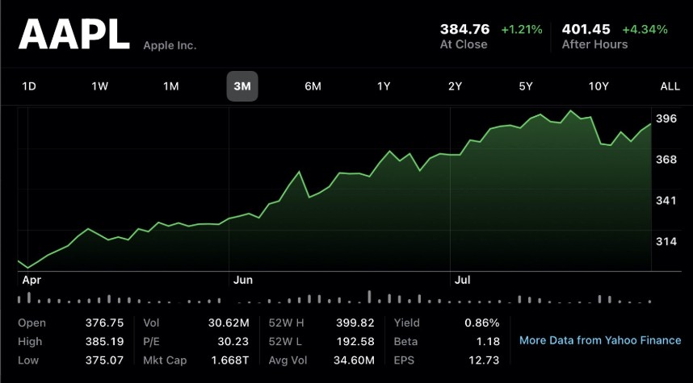
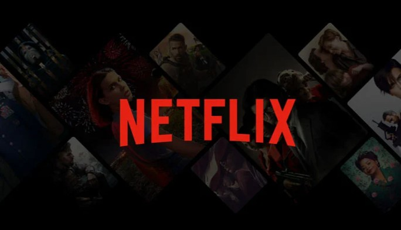
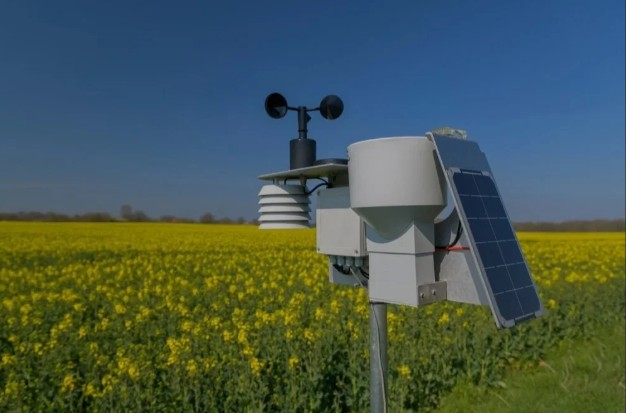
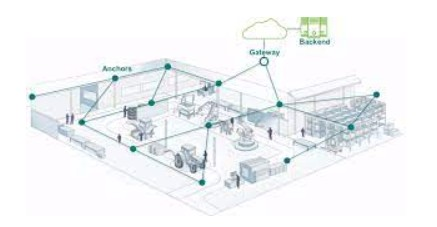

Unlocking Enterprise Value Through Targeted Scope 3 Decarbonization
Strategic exploration of Scope 3 emissions reduction and enterprise value creation.
Read Article →Data-driven analyst with 3+ years of experience transforming complex datasets into actionable insights across analytics, operations, and strategy. I’m an MSc Business Analytics student at UCL with experience across startup operations, data-driven strategy, and analytics. Currently, I work as an Operations Executive Intern at Potentia, a startup, where I support growth initiatives, market research, and execution by working closely with leadership and cross-functional teams. Alongside this, I run The Learning Curve, a non-profit initiative where I’ve conducted 200+ interviews with students and professionals from top universities and organisations, converting real experiences into structured, actionable career insights. My core strengths lie in data analysis, problem-solving, stakeholder management, and clear communication, with hands-on experience using Python, SQL, Excel, and Power BI. I also have a growing interest in sustainability and ESG, particularly in how data can support responsible, long-term business decisions.
Download CVFocus on predictive analytics, machine learning, data engineering, business strategy, and applied statistics using Python and R.
Core foundation in data structures, algorithms, databases, software engineering, and applied programming.
Core foundation in Physics, Chemistry, and Mathematics.
Potentia
The Learning Curve
Bhavna Roadways
End-to-end ML pipeline to predict loan defaults using financial and demographic data, enabling better credit approval decisions.
View on GitHub →
Time-series forecasting of AAPL stock prices using ARIMA and LSTM models to identify short-term trends and volatility.
View on GitHub →Exploratory and KPI-driven analysis of retail sales data to uncover demand trends and store-level performance insights.
View on GitHub →
SQL-based analysis of Netflix’s content catalog to extract insights on genre distribution, release trends, and platform strategy.
View on GitHub →
Machine learning-based weather prediction system using historical environmental data and predictive modeling techniques.
View on GitHub →Analytics-driven insights into YouTube channel performance and audience engagement using real-world metrics.
View on GitHub →
Indoor navigation using graph data structures and shortest-path algorithms to determine precise location and optimal routing within buildings.
Read Full Paper →Strategic exploration of Scope 3 emissions reduction and enterprise value creation.
Read Article →Data-driven ESG frameworks for sustainable investing in the energy sector.
Read Article →